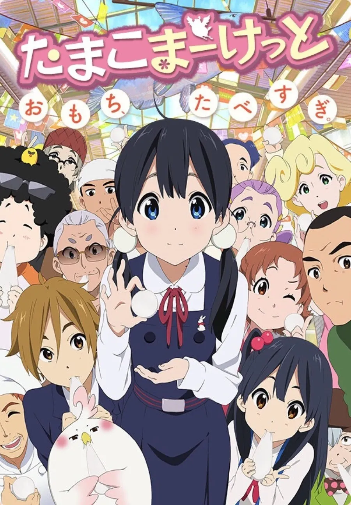

내가 나유키를 좋아해서 나유키로만
1999년작 카논. 이미 2002년에 애니화 되었던걸 겨우 4년만에 한 번 더 다시 만들면서 2쿨로 차음부터 끝까지 작붕없이 감독의 욕심으로 돈과 작화를 쏟아부어 만들었지만...DVD판매량은 코드기아스에 이은 분기 2위 18000장. 얼핏 준수해 보이지만 직전분기 스즈미야 하루히의 우울 45000장, 다음 분기 러키⭐︎스타가 24000장, 그 다음 클라나드가 28000장인걸 감안하면 이민큼 힘을 빡세게 준 작화 (=제작비) 치고는 아쉬운 성적. 그래서인지 다음 작품부터는 힘을 슬슬 빼면서 민들었는데...
하필이면 정박아 애니로 크게 돈을 벌어들여서 그 돈을 가지고 한 번 더 작화에 힘쓰게 되는데...
※극장판 100만 관객에 dvd 160000장을 팔아제낀 정박아 애니
다음해인 2012년 또 괴물같은 작화를 보여준 키니나리마스 애니.
하지만 이 작화를 가지고 dvd 20000장을 팔아제끼는 기염을 토한다.
그리고....

훗날 Dvd 4800장을 팔아 극장판 발사대의 오명을 쓰게 되는 괴작을 만들게 되는데...
생각해보니까 요즘은 bd판매량 줄세우기 안하는거같네. 흥행지표같은 느낌이었는데